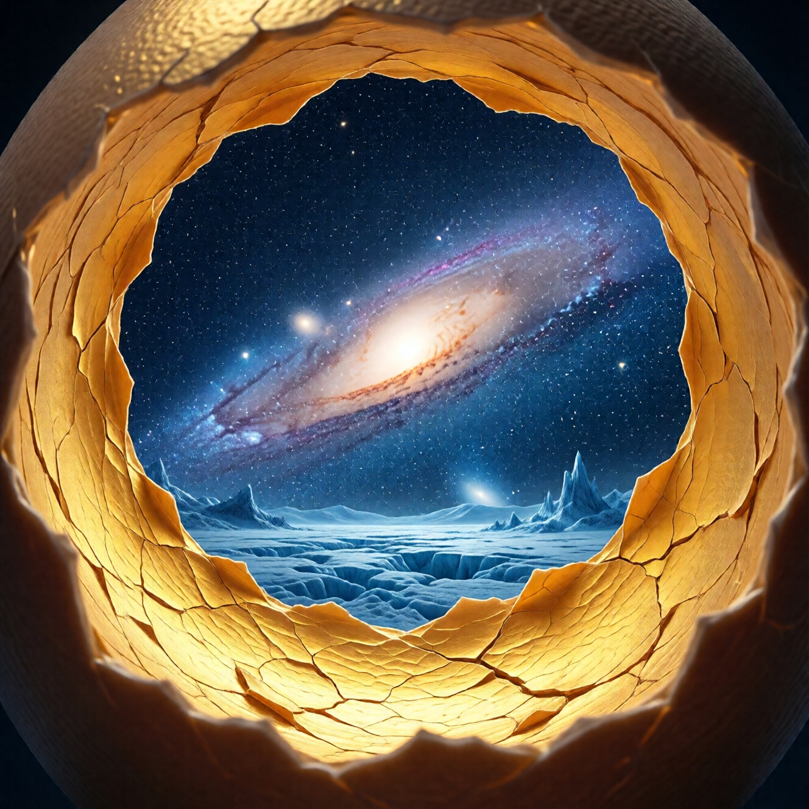

Страх холода: что если снаружи хуже?

Главный страх
Ты знаешь, что в яйце тесно. Знаешь, что желток — ловушка. Знаешь, что пора вылупляться.
И всё равно — не вылупляешься.
Почему?
Потому что снаружи — неизвестность. А неизвестность — страшнее любой тесноты.
«Что если там хуже?» — этот вопрос парализует сильнее, чем любой дискомфорт внутри.
Анатомия страха
Страх снаружи — не один страх. Это — комплекс.
Страх холода
Буквально. В желтке тепло. Снаружи — может быть холодно.
Метафорически: ты боишься потерять комфорт, привычное, защиту.
«Здесь у меня есть работа, семья, репутация. Там — ничего.»
Страх небытия
Самый глубокий. «А вдруг там — ничего? Вдруг я исчезну?»
Это не страх смерти тела. Это страх исчезновения «я». Того, кто ты есть.
И знаешь что? Этот страх — обоснован. Часть «я» действительно исчезнет. Та часть, которая — желток.
Страх неспособности
«А вдруг я не справлюсь? Вдруг я не приспособлен к тому, что снаружи?»
Ты провёл всю жизнь внутри яйца. Ты знаешь, как здесь выживать. Снаружи — другие правила.
Страх потери
«Я потеряю всё, что имею. Отношения, достижения, идентичность.»
И это — правда. Выход = потеря. Вопрос: что ты получишь взамен?
Страх одиночества
«Там никого нет. Я буду один.»
Внутри яйца — другие желтки. Снаружи — неизвестно кто.
Три уровня страха
Уровень 1: Рептильный
Тело кричит: «ОПАСНОСТЬ! ОСТАНОВИСЬ!»
Это — инстинкт выживания. Он не различает реальную угрозу и воображаемую. Для него любая неизвестность = смерть.
Справляться: дыхание, заземление, физическое присутствие.
Уровень 2: Эмоциональный
Сердце сжимается: «Мне страшно. Я не хочу терять.»
Это — привязанность. К людям, вещам, ролям, идентичности.
Справляться: признание, проживание, отпускание.
Уровень 3: Экзистенциальный
Разум шепчет: «А вдруг смысла нет? Вдруг это всё — бессмысленно?»
Это — самый глубокий страх. Страх бездны.
Справляться: принятие неизвестности, доверие процессу.
Почему страх врёт
Страх — не объективный аналитик. Он — сигнальная система, настроенная на выживание.
Проблема: для страха «выживание» = «оставаться таким, какой ты есть».
А ты — не «такой, какой ты есть». Ты — становишься.
Ложь страха №1: «Снаружи опасно»
Страх не знает, что снаружи. Он экстраполирует. Берёт худший внутренний опыт и проецирует на неизвестность.
Правда: ты не знаешь, что снаружи. Никто не знает. Это может быть что угодно.
Ложь страха №2: «Ты не справишься»
Страх оценивает тебя по текущим способностям. Но выход — трансформация. Ты изменишься в процессе.
Гусеница не умеет летать. Бабочка — умеет. Это — та же сущность.
Ложь страха №3: «Лучше синица в руках»
Страх предлагает компромисс: «Оставайся, где есть. Здесь — известно.»
Правда: известное — не обязательно хорошее. Иногда известное — медленное удушение.
Работа со страхом
Страх не нужно побеждать. Страх нужно — интегрировать.
Шаг 1: Признай
«Мне страшно.»
Не «я боюсь, но это глупо». Не «я не должен бояться». Просто: «Мне страшно.»
Признание — первый шаг к работе.
Шаг 2: Локализуй
Где страх в теле? В животе? В груди? В горле?
Страх — не абстракция. Он — физиологическая реакция. Найди его.
Шаг 3: Дыши в него
Направь внимание и дыхание туда, где страх. Не пытайся убрать. Просто — будь с ним.
Страх, которому позволяют быть — трансформируется.
Шаг 4: Спроси
«Чего ты защищаешь меня?»
Страх — не враг. Он — охранник. Возможно, устаревший, но с добрыми намерениями.
Послушай ответ. Возможно, узнаешь что-то важное.
Шаг 5: Поблагодари
«Спасибо, что заботишься. Я учту.»
Это не капитуляция. Это — союз. Страх становится советником, не тюремщиком.
Практика «Письмо страху»
Возьми бумагу. Напиши письмо своему страху.
Что хочешь ему сказать? О чём спросить? В чём обвинить? За что поблагодарить?
Потом — напиши ответ. От имени страха.
Это — диалог частей. Он проясняет.
Что если страх прав?
Иногда — прав.
Если ты — не готов, страх защищает от преждевременного выхода.
Преждевременный выход = разрушение без трансформации. Желток вытек, а цыплёнок не сформировался.
Как понять разницу?
| Страх защитный | Страх ограничивающий | |----------------|----------------------| | «Подожди, ещё не время» | «Никогда не будет времени» | | Указывает на конкретную неготовность | Парализует в принципе | | После паузы — ясность | После паузы — всё то же | | Чувствуется как забота | Чувствуется как тюрьма |
Холод снаружи
Допустим, там действительно холодно. Что тогда?
Тогда — ты оперяешься.
Цыплёнок вылупляется мокрым. Ему холодно. Но у него есть перья. Они высыхают. Он согревается.
Перья — это то, что ты развил внутри. Осознанность. Честность. Юмор. Способность переносить неизвестность.
Если ты работал — ты готов к холоду.
Если не работал — подготовься. Не торопись.
Главный секрет
Страх холода — не про холод.
Страх холода — про потерю себя.
Ты боишься не температуры снаружи. Ты боишься, что там — некому будет мёрзнуть.
И вот это — самый важный момент:
Тот, кто боится потерять себя — не знает, кто он.
Потому что настоящее «ты» — потерять невозможно. Потерять можно только роли, маски, идентичности. Желток.
Когда ты узнаешь, кто ты на самом деле — страх потери исчезает.
Потому что терять — нечего.
Итог
Страх холода — нормален. Он защищает от преждевременного выхода.
Но он же — может стать тюрьмой. Когда защита превращается в заключение.
Работай со страхом как с союзником. Слушай его. Не подчиняйся безусловно.
И помни: снаружи может быть холодно. Но у тебя есть перья.